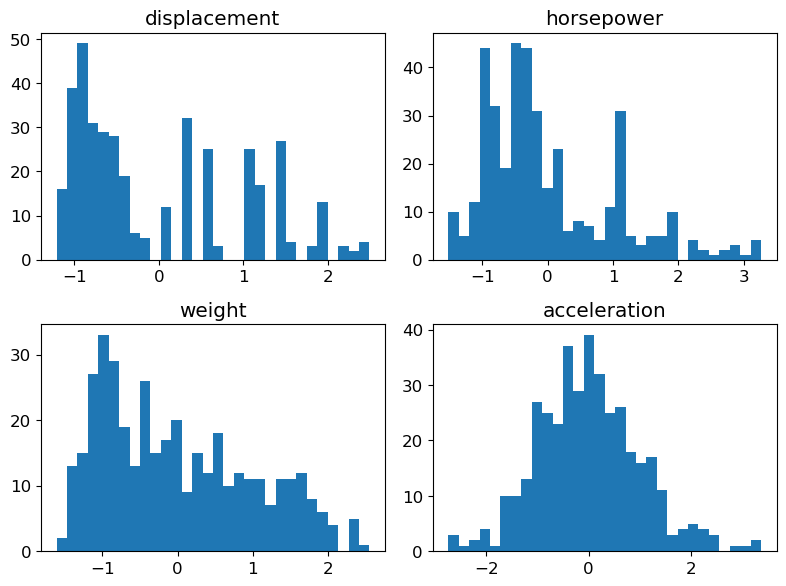
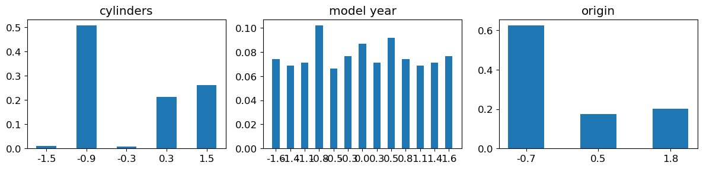
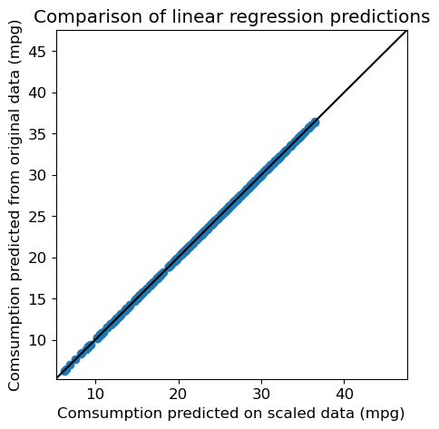
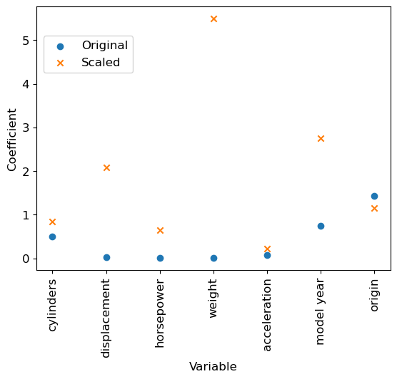
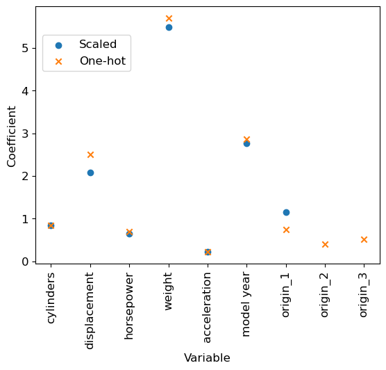

# Load packages numpy, pandas and matplotlib (with aliases np, pd and plt respectively)
%matplotlib inline
import numpy as np
import pandas as pd
import matplotlib.pyplot as pltNotebook 1 : Getting familiar with scikit-learn
Notebook prepared by Chloé-Agathe Azencott, modified by Victor Laigle and by Giann Karlo.
This notebook will allow you to discover scikit-learn functionalities to:
- train and evaluate a supervised learning algorithm.
- scale variables to a range of values.
- transform variables to make their distribution closer to a Gaussian distribution.
- encode categorical variables.
plt.rc('font', **{'size': 12}) # set the global font size for plots (in pt)1. Data Loading
In this notebook, we will work with the data contained in the data/auto-mpg.tsv file. This data, obtained from https://archive.ics.uci.edu/ml/datasets/Auto+MPG, describes cars using the following variables:
1. mpg: continuous (consumption in miles per gallon)
2. cylinders: discrete (number of cylinders)
3. displacement: continuous (air volume moved by the pistons in the engine)
4. horsepower: continuous
5. weight: continuous
6. acceleration: continuous
7. model year: discrete
8. origin: discrete (region of origin, 1=North America, 2=Europe, 3=Asia)
9. car name: stringOur goal is to predict the consumption of a vehicle (mpg) from the other variables (excluding the car name, which is a unique identifier).
We will start by downloading the data from the github repository to your current working directory, and load the data into a pandas dataframe.
If you already downloaded the data, you can use the alternative suggested in the next cell.
# Download the data to the current directory
!wget https://raw.githubusercontent.com/CBIO-mines/fml-dassault-systems-en/main/data/auto-mpg.tsv
# Load the data
df = pd.read_csv("auto-mpg.tsv", delimiter='\t')--2026-05-10 14:21:22-- https://raw.githubusercontent.com/CBIO-mines/fml-dassault-systems-en/main/data/auto-mpg.tsv
Resolving raw.githubusercontent.com (raw.githubusercontent.com)... 2606:50c0:8001::154, 2606:50c0:8003::154, 2606:50c0:8000::154, ...
Connecting to raw.githubusercontent.com (raw.githubusercontent.com)|2606:50c0:8001::154|:443... connected.
HTTP request sent, awaiting response... 200 OK
Length: 17484 (17K) [text/plain]
Saving to: ‘auto-mpg.tsv’
auto-mpg.tsv 100%[===================>] 17.07K --.-KB/s in 0.001s
2026-05-10 14:21:23 (18.0 MB/s) - ‘auto-mpg.tsv’ saved [17484/17484]
Alternatively : If you’re not on Colab and have already downloaded the file to a data folder, uncomment and run the following cell:
# df = pd.read_csv("data/auto-mpg.tsv", delimiter='\t')# Check what the data looks like with the first 10 rows of the dataframe
df.head(10)| mpg | cylinders | displacement | horsepower | weight | acceleration | model year | origin | car name | |
|---|---|---|---|---|---|---|---|---|---|
| 0 | 18.0 | 8 | 307.0 | 130 | 3504 | 12.0 | 70 | 1 | chevrolet chevelle malibu |
| 1 | 15.0 | 8 | 350.0 | 165 | 3693 | 11.5 | 70 | 1 | buick skylark 320 |
| 2 | 18.0 | 8 | 318.0 | 150 | 3436 | 11.0 | 70 | 1 | plymouth satellite |
| 3 | 16.0 | 8 | 304.0 | 150 | 3433 | 12.0 | 70 | 1 | amc rebel sst |
| 4 | 17.0 | 8 | 302.0 | 140 | 3449 | 10.5 | 70 | 1 | ford torino |
| 5 | 15.0 | 8 | 429.0 | 198 | 4341 | 10.0 | 70 | 1 | ford galaxie 500 |
| 6 | 14.0 | 8 | 454.0 | 220 | 4354 | 9.0 | 70 | 1 | chevrolet impala |
| 7 | 14.0 | 8 | 440.0 | 215 | 4312 | 8.5 | 70 | 1 | plymouth fury iii |
| 8 | 14.0 | 8 | 455.0 | 225 | 4425 | 10.0 | 70 | 1 | pontiac catalina |
| 9 | 15.0 | 8 | 390.0 | 190 | 3850 | 8.5 | 70 | 1 | amc ambassador dpl |
Create data matrices X and y
- X: predictive variables
- y: true values (“ground truth”)
X = np.array(df.drop(columns=['mpg', 'car name']))y = np.array(df['mpg'])X.shape(392, 7)y.shape(392,)2. Data Visualization
We will now visualize the variables representing our vehicles. To do this, we will separate the continuous variables (which we will represent each with a histogram) from the discrete variables (which we will represent with bar charts).
Feel free to adjust the parameters of the matplotlib methods to produce more readable plots.
# Define continuous and discrete features
continuous_features = ['displacement', 'horsepower', 'weight', 'acceleration']
discrete_features = ['cylinders', 'model year', 'origin']
# Get feature names and their indices in the dataframe
features = list(df.drop(columns=['mpg', 'car name']).columns)
continuous_features_idx = [features.index(feat_name) for feat_name in continuous_features]
discrete_features_idx = [features.index(feat_name) for feat_name in discrete_features]Histograms for the continuous variables
fig = plt.figure(figsize=(8, 6))
for (plot_idx, feat_idx) in enumerate(continuous_features_idx):
# Create a graph at position (plot_idx+1) of a 2x2 grid
ax = fig.add_subplot(2, 2, (plot_idx+1))
# Display histogram for the variable at index feat_idx
h = ax.hist(X[:, feat_idx], bins=30, edgecolor='none')
# Use variable name as title
ax.set_title(features[feat_idx])
# Handle spacing between graphs
fig.tight_layout(pad=1.0)Bar charts for the discrete variables
fig = plt.figure(figsize=(12, 3))
for (plot_idx, feat_idx) in enumerate(discrete_features_idx):
# Create a graph at position (plot_idx+1) of a 1x3 grid
ax = fig.add_subplot(1, 3, (plot_idx+1))
# Compute frequencies of each value of the variable at index feat_idx
feature_values = np.unique(X[:, feat_idx])
frequencies = [(float(len(np.where(X[:, feat_idx]==value)[0]))/X.shape[0]) \
for value in feature_values]
# Display bar chart for the variable at index feat_idx
b = ax.bar(range(len(feature_values)), frequencies, width=0.5,
tick_label=list([int(n) for n in feature_values]))
# Set variable name as title
ax.set_title(features[feat_idx])
fig.tight_layout(pad=1.0)Question: Observe the orders of magnitude / value ranges of the different variables. What can you comment about them ?
Histogram of the labels
plt.hist(y, bins=30, edgecolor='none')
plt.title('mpg')
plt.show()3. Linear Regression
We will now use scikit-learn to train a linear regression on the data.
The linear models in scikit-learn are implemented in the sklearn.linear_model module.
Feel free to refer frequently to the scikit-learn documentation, which is very comprehensive.
The framework, which is very common, is the following: - initialize a model object - train the model on the data - use the model to predict new values
from sklearn import linear_modelModel training
# Initialize a LinearRegression object
predictor = linear_model.LinearRegression()# Train this object on the data
predictor.fit(X, y)LinearRegression()In a Jupyter environment, please rerun this cell to show the HTML representation or trust the notebook.
On GitHub, the HTML representation is unable to render, please try loading this page with nbviewer.org.
LinearRegression()
Predictions
We can now use this model to predict labels from the variables. Particularly, it’s possible to apply it to the data we’ve just used to train it:
y_pred = predictor.predict(X)CAUTION In practice, what we are really interested in is a model’s ability to make good predictions on data that was not used to train it. A model’s performance on the data used to train it does not allow to determine whether it is a good model. We will discuss this in more detail later in the course.
Performance
We would now like to evaluate our model.
To do this, we will use the functionalities of the metrics module from scikit-learn.
As this is a regression problem, we will use the RMSE (Root Mean Squared Error) as a measure of the model’s performance: this is the square root of the mean of the squared errors. The square root is used for homogeneity reasons: the RMSE is expressed in the same unit as the label.
from sklearn import metricsprint("RMSE: %.2f" % metrics.root_mean_squared_error(y, y_pred))RMSE: 3.29Question: What do you think about this error ? Is it high ? Low ?
Visualization
We can also use a visual, and represent each individual from the test set by its predicted label vs.its true label.
fig = plt.figure(figsize=(5, 5))
plt.scatter(y, y_pred)
plt.xlabel("Real Consumption (mpg)")
plt.ylabel("Predicted Consumption (mpg)")
plt.title("Linear Regression")
# Same values on both axes
axis_min = np.min([np.min(y), np.min(y_pred)])-1
axis_max = np.max([np.max(y), np.max(y_pred)])+1
plt.xlim(axis_min, axis_max)
plt.ylim(axis_min, axis_max)
# Diagonal y=x
plt.plot([axis_min, axis_max], [axis_min, axis_max], 'k-')
plt.show()Regression coefficients
To understand our model, we can look at the coefficients attributed to each variable in the learnt linear model.
# Display, for each variable, the absolute value of its coefficient in the model
num_features = X.shape[1]
feature_names = df.drop(columns=['mpg', 'car name']).columns
plt.scatter(range(num_features), np.abs(predictor.coef_))
plt.xlabel('Variable')
tmp = plt.xticks(range(num_features), feature_names, rotation=90)
tmp = plt.ylabel('Coefficient')
plt.show()
Question: Which variable has the highest coefficient (in absolute value) ? Do you think that it means this variable plays a very important part in the prediction ?
4. Changing the scale of the variables
The fact that variables are on different scales makes the interpretation of the linear regression coefficients quite tricky.
Variables transformation
Centering (bringing to a mean of 0) and scaling (bringing to a standard deviation of 1) the variables helps to remedy this problem.
n_samples, n_features = X.shape
X_scaled_manual = np.zeros_like(X) # Create an array with same shape as X to hold the standardized variables
# Compute the mean and standard deviation of each variable in X, and use them to standardize the variable
# Values from column i in the array X can be accessed with X[:, i]
for i in range(n_features):
# Compute the mean
mean = sum(X[:, i]) / n_samples
# Compute the standard deviation
variance = sum((X[:, i] - mean) ** 2) / n_samples
std_dev = variance ** 0.5
# Standardize the variable
X_scaled_manual[:, i] = (X[:, i] - mean) / std_devprint("Original data (first 5 rows and 5 columns):")
print(X[0:5, 0:5])
print("\nStandardized data (first 5 rows and 5 columns):")
print(X_scaled_manual[0:5, 0:5])Original data (first 5 rows and 5 columns):
[[ 8. 307. 130. 3504. 12. ]
[ 8. 350. 165. 3693. 11.5]
[ 8. 318. 150. 3436. 11. ]
[ 8. 304. 150. 3433. 12. ]
[ 8. 302. 140. 3449. 10.5]]
Standardized data (first 5 rows and 5 columns):
[[ 1.48394702 1.07728956 0.66413273 0.62054034 -1.285258 ]
[ 1.48394702 1.48873169 1.57459447 0.84333403 -1.46672362]
[ 1.48394702 1.1825422 1.18439658 0.54038176 -1.64818924]
[ 1.48394702 1.04858429 1.18439658 0.53684535 -1.285258 ]
[ 1.48394702 1.02944745 0.92426466 0.5557062 -1.82965485]]Check that the means and standard deviations of your variables are indeed all set to 0 and 1 (or values very close to these, due to numeric approximations).
print(f"Means: {[f'{x:.3f}' for x in X_scaled_manual.mean(axis=0)]}")
print(f"Std: {[f'{x:.3f}' for x in X_scaled_manual.std(axis=0)]}")Means: ['-0.000', '-0.000', '-0.000', '-0.000', '0.000', '-0.000', '0.000']
Std: ['1.000', '1.000', '1.000', '1.000', '1.000', '1.000', '1.000']Now that we’ve seen how it works, we can use the StandardScaler object of the sklearn.preprocessing module to do it for us automatically.
from sklearn import preprocessingstandard_scaler = preprocessing.StandardScaler()
standard_scaler.fit(X)StandardScaler()In a Jupyter environment, please rerun this cell to show the HTML representation or trust the notebook.
On GitHub, the HTML representation is unable to render, please try loading this page with nbviewer.org.
StandardScaler()
X_scaled = standard_scaler.transform(X)Note the use of the transform method here: the fit function is used to compute the values needed to center and scale the data in X, but it does not transform the data itself. We need to specifically ask to transform the data. Among other things, it allows to keep our original data X unchanged if we need to. There also exists a fit_transform method to do both in the same function call.
Visualization of the new variables
Histograms for continuous variables
We simply replace X by X_scaled in the code used previously.
fig = plt.figure(figsize=(8, 6))
for (plot_idx, feat_idx) in enumerate(continuous_features_idx):
# Create a graph at position (plot_idx+1) of a 2x2 grid
ax = fig.add_subplot(2, 2, (plot_idx+1))
# Display histogram for the variable at index feat_idx
h = ax.hist(X_scaled[:, feat_idx], bins=30, edgecolor='none')
# Use variable name as title
ax.set_title(features[feat_idx])
# Handle spacing between graphs
fig.tight_layout(pad=1.0)Bar charts for discrete variables
Same here, we replace X by X_scaled in the previous code.
fig = plt.figure(figsize=(12, 3))
for (plot_idx, feat_idx) in enumerate(discrete_features_idx):
# Create a graph at position (plot_idx+1) of a 1x3 grid
ax = fig.add_subplot(1, 3, (plot_idx+1))
# Compute frequencies of each value of the variable at index feat_idx
feature_values = np.unique(X_scaled[:, feat_idx])
frequencies = [(float(len(np.where(X_scaled[:, feat_idx]==value)[0]))/X_scaled.shape[0]) \
for value in feature_values]
# Display bar chart for the variable at index feat_idx
b = ax.bar(range(len(feature_values)), frequencies, width=0.5,
tick_label=list(['%.1f' % n for n in feature_values]))
# Set variable name as title
ax.set_title(features[feat_idx])
fig.tight_layout(pad=1.0)Impact on the model
We can now train a model predictor_scaled on the centered and scaled data
# Create a new LinearRegression object
predictor_scaled = linear_model.LinearRegression()
# Train predictor_scaled on the new data
predictor_scaled.fit(X_scaled, y)LinearRegression()In a Jupyter environment, please rerun this cell to show the HTML representation or trust the notebook.
On GitHub, the HTML representation is unable to render, please try loading this page with nbviewer.org.
LinearRegression()
And create an array y_pred_scaled which contains the predictions of predictor_scaled on the data.
y_pred_scaled = predictor_scaled.predict(X_scaled)RMSE
The RMSE of this new model is:
print("RMSE (scaled): %.2f" % metrics.root_mean_squared_error(y, y_pred_scaled))RMSE (scaled): 3.29Question: Compare it to the previous RMSE. Are the predictions any different ?
fig = plt.figure(figsize=(5, 5))
plt.scatter(y_pred_scaled, y_pred)
plt.xlabel("Comsumption predicted on scaled data (mpg)")
plt.ylabel("Comsumption predicted from original data (mpg)")
plt.title("Comparison of linear regression predictions")
# Same values on both axes
axis_min = np.min([np.min(y), np.min(y_pred)])-1
axis_max = np.max([np.max(y), np.max(y_pred)])+1
plt.xlim(axis_min, axis_max)
plt.ylim(axis_min, axis_max)
# Diagonal y=x
plt.plot([axis_min, axis_max], [axis_min, axis_max], 'k-')
plt.show()


Comparison of regression coefficients
Finally, we can compare the regression coefficients from both models.
# Display, for each variable, the absolute value of its coefficient in the model
num_features = X.shape[1]
plt.scatter(range(num_features), np.abs(predictor.coef_), label='Original')
plt.scatter(range(num_features), np.abs(predictor_scaled.coef_), label='Scaled', marker='x')
plt.xlabel('Variable')
tmp = plt.xticks(range(num_features), feature_names, rotation=90)
tmp = plt.ylabel('Coefficient')
plt.legend(loc=(0.02, 0.75))
plt.show()
We can notice that, even if the RMSE remains identical, standardizing (= centering and scaling) the variables changed the values of the parameters learnt by the model. We can compare for example the values taken by the intercept (independent term in the linear model).
print("Intercept in the two models")
print(f"- Original data: {predictor.intercept_:.3f}")
print(f"- Scaled data : {predictor_scaled.intercept_:.3f}")Intercept in the two models
- Original data: -17.218
- Scaled data : 23.446Question: Which variables are now the most relevant to predict a vehicle’s consumption ? Does it seem sensible ?
5. Encoding categorical variables
The origin variable is a qualitative (or categorical) variable: the 1-2-3 encoding is completely arbitrary. It implies, in particular, if we think in terms of distances, that Asia is twice as far from North America as it is from Europe, which does not make sense.
A more reasonable encoding for this kind of case is what is called one-hot, or dummy encoding: we represent the variable by as many binary variables as there are possible values (3 in the case of the origin variable: the first corresponds to North America, the second to Europe, the third to Asia), and we set to 1 the single binary variable corresponding to the value we are encoding.
Thus the single origin variable becomes 3 binary variables:
North America --> 1, 0, 0
Europe --> 0, 1, 0
Asia --> 0, 0, 1This representation has the disadvantage of increasing the number of variables, but the Euclidean distances are now more reasonable (they are 1 if the values are different and 0 if they are identical).
This functionality exists in pandas as well as in scikit-learn.
One-hot transformation
# Create a new dataframe where the 'origin' column is replaced by its 'one-hot' encoding
df_dummies = pd.get_dummies(df, columns=['origin'])df_dummies.head()| mpg | cylinders | displacement | horsepower | weight | acceleration | model year | car name | origin_1 | origin_2 | origin_3 | |
|---|---|---|---|---|---|---|---|---|---|---|---|
| 0 | 18.0 | 8 | 307.0 | 130 | 3504 | 12.0 | 70 | chevrolet chevelle malibu | True | False | False |
| 1 | 15.0 | 8 | 350.0 | 165 | 3693 | 11.5 | 70 | buick skylark 320 | True | False | False |
| 2 | 18.0 | 8 | 318.0 | 150 | 3436 | 11.0 | 70 | plymouth satellite | True | False | False |
| 3 | 16.0 | 8 | 304.0 | 150 | 3433 | 12.0 | 70 | amc rebel sst | True | False | False |
| 4 | 17.0 | 8 | 302.0 | 140 | 3449 | 10.5 | 70 | ford torino | True | False | False |
# Extract the data once again
X_dummies = np.array(df_dummies.drop(columns=['mpg', 'car name']))As previously, we normalize each of the variables.
# Initialize a StandardScaler object
standard_scaler_dummies = preprocessing.StandardScaler()
# Fit the object on the data with dummies
standard_scaler_dummies.fit(X_dummies)
# Scale the data with dummies
X_scaled_dummies = standard_scaler_dummies.transform(X_dummies)Impact on the model
Let’s learn a linear regression on the data where the origin varibale has been replaced by its one-hot encoding.
To do so, we create an instance predictor_dummy from the LinearRegression class, trained on the data containing the one-hot version of the origin variable.
# Create a new LinearRegression object
predictor_dummy = linear_model.LinearRegression()
# Train predictor_dummy on the new data
predictor_dummy.fit(X_scaled_dummies, y)LinearRegression()In a Jupyter environment, please rerun this cell to show the HTML representation or trust the notebook.
On GitHub, the HTML representation is unable to render, please try loading this page with nbviewer.org.
LinearRegression()
We can now create an array y_pred_dummy which contains the predictions of the new linear regression on these data.
y_pred_dummy = predictor_dummy.predict(X_scaled_dummies)RMSE for this new model is:
print("RMSE (one-hot encoding): %.2f" % metrics.root_mean_squared_error(y, y_pred_dummy))RMSE (one-hot encoding): 3.27Question: Compare it to the previous RMSE.
Comparison to previous predictions
Are the performances really different ? We can compare the predictions directly:
fig = plt.figure(figsize=(5, 5))
plt.scatter(y_pred, y_pred_dummy)
plt.xlabel("Predicted consumption (mpg) (baseline)")
plt.ylabel("Predicted consumption (mpg) (one-hot)")
plt.title("Comparison of Linear Regression predictions")
# Same values on both axes
axis_min = np.min([np.min(y_pred), np.min(y_pred_dummy)])-1
axis_max = np.max([np.max(y_pred), np.max(y_pred_dummy)])+1
plt.xlim(axis_min, axis_max)
plt.ylim(axis_min, axis_max)
# Diagonal y=x
plt.plot([axis_min, axis_max], [axis_min, axis_max], 'k-')
plt.show()
Let’s see what the correlation is between the two predictions
import scipy.stats as str, pval = st.pearsonr(y_pred, y_pred_dummy)
print("Correlation between predictions : %.2f (p=%.2e)" % (r, pval))Correlation between predictions : 1.00 (p=0.00e+00)Comparison of the regression coefficients
Let’s now compare visually the two models:
# Display for each variable, the absolute value of its coefficient in the model
num_features = X.shape[1]
plt.scatter(range(num_features), np.abs(predictor_scaled.coef_), label='Scaled')
num_features2 = X_scaled_dummies.shape[1]
plt.scatter(range(num_features2), np.abs(predictor_dummy.coef_), label='One-hot', marker='x')
feature_names2 = df_dummies.drop(columns=['mpg', 'car name']).columns
plt.xlabel('Variable')
tmp = plt.xticks(range(num_features2), feature_names2, rotation=90)
tmp = plt.ylabel('Coefficient')
plt.legend(loc=(0.02, 0.75))
plt.show()
Conclusion
We reached the end of this practical. Here is a summary of what we have covered, with the key takeaways: - We used the scikit-learn library to predict a quantitative, continuous variable (car consumption, mpg) from continuous and discrete variables (cars features)
scikit-learnuses a general framework with- object initialization
- Training the object on the data with
fit - Predicting the output values with
predictor transforming the data withtransform
We tried a first predictive model: the linear regression from
sklearn.linear_modelScaling the data so that every variable has some similar range of values is (very) important.
- For the linear regression model here, it allowed a much better interpretation
- With other models, scaling the variables might be critical for the model to learn anything
- Especially, it prevents the model to attribute too much importance to a variable solely because of its values range
We’ve used an example of
scikit-learn’s object to scale the data: theStandardScalerCategorical variables can be encoded with a one-hot encoding, which avoids arbitrary order or distances between the variables. A drawback of this is that we need to increase the number of variables used by the model, so it is often a trade-off between these two aspects.